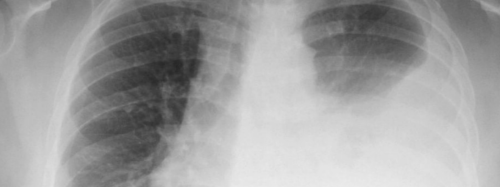

<h2>O derrame pleural é caraterizado pela acumulação de líquido em excesso entre as pleuras.</h2>

<p></p>

<br/>
<!---
<span class="latest-article">Últimos artigos</span>

<ul class="index">
  {% for post in site.categories.artigo %}
    <li><a href="{{ post.url }}">{{ post.title }}</a> <span class="date">{{ post.date | date: "%-d/%m/%Y" }}</span></li>
  {% endfor %}
</ul>

<br/>
-->
<span class="latest-article">Derrame Pleural</span>

<ul class="index">
  {% for post in site.categories.derramepleural %}
    <li><a href="{{ post.url }}">{{ post.title }}</a></li>
  {% endfor %}
</ul>

<br/>

<span class="latest-article">Anatomia e Fisiologia</span>

<ul class="index">
  {% for post in site.categories.anatomia %}
    <li><a href="{{ post.url }}">{{ post.title }}</a></li>
  {% endfor %}
</ul>